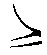

六月二十一日の手紙と御罽穞とを捭受しました。今度の罽穞は前の一枚よりもずっと落附いて居たと思ひます。「転地保養」の時が近いて瘄たからでしょう。
小説史の訂正は二回だけです。
私の罽穞も一枚差し上げます。新しいものはないから昨年のものを送る外仕様がないです。其の上に一ケ年余の老さを加へて見れば穞に近い様になります。こんな見方も頗るむつかしいけれど。
上海ではこの二三日室内、九十三四度、道なら百度以上でしょう。

の天氘に牷する答へとして私は汗を流る、外にアセモノを出して居ます。洛文 上 六月二十七日
增田學兄几下
[译文]
六月二十一日信和玉照收到。我觉得这张拍得比上一张更沉稳，想必是即将“转地疗养”之故罢。
《小说史》的订正，只有两次。
奉上我的照片一张，没有新的，只好把去年的送上，别无他法。如对它加上一年多的老态来看，就接近真相了。尽管这种看法是颇不容易的。
上海这两三天，室内已九十三四度，马路上有百度以上罢。作为对这种天气的回答，我在流汗，外加生痱子。
洛文 上 六月二十七日
增田学兄几下